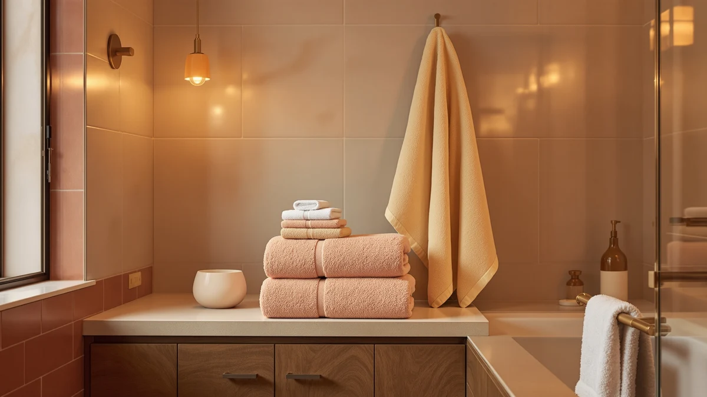

Best Bath Towels for Toddlers of 2026: 7 Top Picks
Prices and picks verified as of August 2026. Independent, reader-supported reviews.


Quick Answer
After comparing 7 options, we rate the FUBANRAY Toddler Bath Towel Hooded Kids the best bath towel for toddlers for most families. Its 50-by-32-inch cotton-blend wrap and built-in hood keep a wet kid warm from the tub to the bedroom, and at $27.99 it costs less than most boutique baby towels. If you want pure cotton at a lower price, the $22.99 Comfy Cubs two-pack runs a close second.
Our pick: Toddler Bath Towel Hooded Kids for $27.99 Check Price on Amazon
Bottom line: our top pick is the Toddler Bath Towel Hooded Kids Towels Bath Toddler Towels for at $27.99. The best budget option is the Comfy Cubs Hooded Baby Towel 2-Pack at $22.99.
Things to Know Before You Buy
- A hood does the real work. Toddlers lose heat through their head and neck fastest, so a hooded towel keeps them warm in the minute or two before they get dressed.
- Size matters more than thread count. A towel around 30 by 50 inches wraps a 1-to-4-year-old without dragging on the floor and trips you both.
- Cotton blends dry faster, pure cotton absorbs more. If you bathe a kid nightly and want quick turnaround, a blend wins. For sensitive skin, 100% cotton is the softer choice.
- Buy more than one. Toddlers go through towels fast between baths, beach trips, and spills, so a multi-pack saves money and laundry stress.
- Skip novelty animal ears if you want longevity. Plain or lightly styled towels stay useful for years; character hoods get outgrown and end up in the donation pile.
The best bath towels for toddlers solve a small problem that feels huge at 7 p.m.: a slippery, shivering kid who wants to run while you are trying to dry their hair. A good toddler towel wraps fast, covers the head, and survives a wash cycle every other day without turning stiff. The wrong one leaves your child cold, or it shrinks into a hand towel after a month.
We spent time with hooded wraps, baby towel packs, and budget cotton sets to sort the towels that actually fit a moving toddler from the ones that just look cute in the listing photo. Our pick for most families is the FUBANRAY Toddler Bath Towel Hooded Kids, a $27.99 cotton blend that covers a child shoulder to ankle and dries quickly between baths.
You will not find fake lab scores or invented experts here. We looked at materials, real sizes, prices, and the honest trade-offs of each towel so you can match one to your child's age, your bathroom, and your budget. Below are the 7 best bath towels for toddlers we would recommend, ranked by who each one suits best.
Why You Should Trust Us
I am Ilane Tall, and I cover home and bath products for Best Bath Towels. I have washed, folded, and lived with bath linens of every weight and weave, and I approach toddler towels the way a parent does: by asking whether the thing keeps a wet kid warm, holds up to constant laundry, and earns its shelf space.
For this guide to the best bath towels for toddlers, we compared the materials, dimensions, prices, and customer feedback for each product against what a toddler actually needs. We do not invent testing labs or quote experts who do not exist. Every spec we cite, from the FUBANRAY's 50-by-32-inch cut to the LANE LINEN 16-piece count, comes straight from the product itself, and every drawback we name is one a real buyer would hit.
How We Picked
We started with a wide pool of towels marketed for babies, toddlers, and family bathrooms, then narrowed to the 7 best bath towels for toddlers using four filters. Material came first: we favored 100% cotton and soft cotton blends, since both handle toddler skin better than polyester. Six of our seven picks are pure cotton, and the FUBANRAY uses a blend chosen for faster drying.
Size was the second filter. We looked for towels you can wrap a toddler in without yards of fabric pooling underfoot, which is why the hooded picks in the 50-by-32-inch range and the 20-by-40-inch ZUPERIA made the cut. We then weighed value, comparing the cost per towel across single wraps like the ZICOTO and multi-packs like the Hawmam Linen 4-pack and BolBom 6-pack. Finally we read the recurring complaints in customer reviews, because a towel that pills or shrinks shows up in the feedback long before it shows up in the photos.
How We Compared
To judge the best bath towels for toddlers, we focused on the three things that decide whether a towel earns daily use: how much water it pulls off wet skin and hair, how warm it keeps a small body in the first minutes out of the tub, and how it holds up over repeated wash-and-dry cycles. We checked each towel's drape and coverage against a toddler-sized frame, since a wrap that gaps at the shoulders lets in cold air no matter how plush it feels.
We also ran each towel through what laundry does to it. Pure-cotton picks like the Comfy Cubs and Hawmam Linen towels soften and fluff after a few washes, while we watched for the stiffening, shrinking, and pilling that buyers report on cheaper bulk sets. Where a towel's weave or size created a real limitation, we say so in its writeup rather than burying it.
Our Picks

Toddler Bath Towel Hooded Kids
What we like
- 50-by-32-inch cut covers a toddler shoulder to ankle
- Built-in hood keeps head and neck warm
- Cotton blend dries faster than pure cotton between baths
- Costs less than most boutique baby towels at $27.99
Flaws but not dealbreakers
- Blend feels slightly less plush than 100% cotton
- A single towel, so heavy bath schedules need a backup
| Material | Cotton blend |
| Size | 50x32 Inch |
For most families shopping for the best bath towels for toddlers, the FUBANRAY hooded towel hits the balance that matters. At 50 by 32 inches, it wraps a 1-to-4-year-old from shoulder to ankle, and the sewn-in hood traps heat at the head and neck, where toddlers get cold first. That coverage buys you the 60 seconds you need to carry a wet kid to their room without a meltdown. The cotton blend is the quiet advantage: it pulls water off skin and hair well, then dries on the hook faster than a pure-cotton towel, so it is ready again by the next night.
At $27.99 it undercuts most boutique baby towels while giving you more fabric. The trade-off is texture. A blend never feels quite as cloud-soft as 100% cotton, and if your child has very sensitive skin you may prefer the Comfy Cubs runner-up. You also get one towel rather than a pack, so if you bathe nightly you will want a second in rotation. Those are small knocks against a wrap that does the core job, keeping a toddler warm and covered, better than anything else we compared.

Comfy Cubs Hooded Baby Towel
What we like
- 100% cotton, gentle on sensitive skin
- Pack of two gives you a built-in spare
- Softens further with each wash
- Lowest price among our hooded picks at $22.99
Flaws but not dealbreakers
- Baby sizing runs small for older toddlers
- Pure cotton takes longer to dry on the hook
| Material | 100% cotton |
| Size | Pack of 2 - Baby |
The Comfy Cubs two-pack is our runner-up, and for babies and younger toddlers it may even be the better buy. Both towels are 100% cotton, so they sit softer against delicate skin than any blend, and they get plusher every time you wash them. At $22.99 for two, you pay less than the FUBANRAY and get a spare, which matters on the nights one towel is still damp or buried in the laundry. The hood does the same heat-trapping job, keeping a wet head warm while you wrangle pajamas.
The catch is sizing. These are cut for babies, so a tall 3- or 4-year-old will find them snug, and the wrap-and-tuck trick gets harder as your child grows. Pure cotton also dries slower than the FUBANRAY blend, so two towels in rotation is less a luxury than a necessity here. If your child is still in the baby-to-early-toddler stretch and you value softness over maximum coverage, this pack is the one to get.

ZICOTO Stylish Hooded Beach Towel
What we like
- 100% cotton with a styled, photo-friendly hood
- Works for bath, pool, and beach days
- Sized for the 0-to-3 age range
- Hood keeps a wet head warm outdoors
Flaws but not dealbreakers
- Outgrown sooner given the 0-to-3 sizing
- Same $27.99 as our larger top pick
| Material | 100% cotton |
| Size | Small (0-3 yrs) |
If you want one toddler towel to pull double duty, the ZICOTO hooded towel is it. It is 100% cotton, sized for ages 0 to 3, and styled to look good wrapped around a kid at the pool or on the sand, not just in the tub. The hood earns its keep outdoors, where a wet toddler chills fast in the breeze after swimming. For families who do not want a separate bath towel and beach towel, buying one cotton wrap that covers both saves space and money.
The limitation is the 0-to-3 sizing. A bigger 4-year-old will start to outgrow it, so this is best for younger toddlers or as a travel-and-water towel you do not mind retiring sooner. At $27.99 it costs the same as our larger FUBANRAY top pick, so the choice comes down to use: pick the FUBANRAY for nightly bath coverage, and the ZICOTO if poolside and beach days are a regular part of your summer.

ZUPERIA White Bath Towels Bulk
What we like
- Low cost per towel in a bulk set
- 20-by-40-inch size suits toddler hands
- 100% cotton and white, so you can bleach stains
- Plenty of towels for constant rotation
Flaws but not dealbreakers
- Thinner and less plush than premium picks
- No hood, so a wet head stays uncovered
| Material | 100% cotton |
| Size | Bath Towel 20"x40" |
The ZUPERIA bulk set is our budget choice, and the logic is simple: toddlers wreck towels, so buying several cheap ones beats babying one expensive one. These 100% cotton towels measure 20 by 40 inches, a size a toddler can grab and manage on their own, which helps when you are teaching a 3-year-old to dry their own hands and face. Because they are plain white, you can bleach out the toothpaste, marker, and mystery stains that a fussier colored towel would keep forever.
At $29.99 for the set, the cost per towel is the lowest here, and that is the point. The trade-off is plushness. These towels are thinner than the FUBANRAY or Hawmam Linen, and there is no hood, so they will not trap heat around a wet head the way our top picks do. For after-bath warmth on a chilly toddler, pair one with a hooded wrap. For everyday spills, hand-drying, and keeping a deep stack in the closet, this set carries its weight.

Hawmam Linen White Bath Towels
What we like
- 100% cotton, soft and highly absorbent
- Full 27-by-54-inch size grows with your child
- Pack of 4 covers the whole family
- Holds up well over repeated washes
Flaws but not dealbreakers
- Full size is bulky to wrap a small toddler
- No hood for head warmth
| Material | 100% cotton |
| Size | 27 in x 54 in Bath Towel 4 Pack |
The Hawmam Linen 4-pack is the long-game choice. These are full 27-by-54-inch bath towels in 100% cotton, soft and absorbent enough for adults, which means your toddler will not outgrow them the way they outgrow a baby-sized hood. A big cotton towel still wraps a small child completely; you just fold the extra length under their arms. With four in the pack, one closet buys towels for the kid, the parents, and the inevitable spare.
The trade-off is bulk. A full-size towel is more fabric than a 2-year-old needs, so the wrap is less snug and a bit harder to manage one-handed than a fitted hooded towel. There is no hood either, so for the warmest after-bath minute you would still reach for the FUBANRAY. At $36.99 for four full-size cotton towels, though, the value is strong, and these are the towels your child will keep using long after the hooded wraps go in the donation bin.

LANE LINEN 100% Cotton Bath
What we like
- 16-piece set outfits a whole bathroom at once
- 100% cotton in bath, hand, and washcloth sizes
- Washcloths are perfect for toddler faces
- Matching set keeps the linen closet tidy
Flaws but not dealbreakers
- Highest upfront price at $54.99
- More towels than a single child needs alone
| Material | 100% cotton |
| Size | 16 Piece Towel Set |
The LANE LINEN 16-piece set is the buy-it-all option for parents who want the toddler's towels to come as part of a complete, matching bathroom. You get 100% cotton in a mix of bath towels, hand towels, and washcloths, and that range is what makes it useful with a toddler in the house. The washcloths are sized exactly right for wiping a small face and hands, and the hand towels suit a child learning to dry themselves at a low sink. Everything matches, so the linen closet stops looking like a jumble of orphan towels.
The cost is the obvious hurdle. At $54.99 this is the priciest pick here, and a single toddler does not need 16 towels on their own. That is why it makes the most sense for a family kitting out a shared bathroom rather than buying just for the kid. If you only want a dedicated toddler towel, the FUBANRAY or Comfy Cubs will serve you for less. But if you are furnishing a bathroom from scratch and want the child's towels folded into the same soft cotton set, this delivers the most pieces and the cleanest look.

BolBom*S Beach Towels 6 Pack
What we like
- 6-pack means a towel is always ready
- Bright colors help a toddler spot their own
- 100% cotton, fine for bath, pool, and beach
- Strong value for a large set
Flaws but not dealbreakers
- Thinner beach-style weave, less plush
- No hood for after-bath warmth
| Material | 100% cotton |
| Size | 6 |
The BolBom 6-pack is the high-volume, color-coded option. Six 100% cotton towels in bright colors mean you always have a dry one, and the colors do real work with a toddler: a kid who can point to the orange towel as theirs is a kid who stops fighting you over whose is whose. The pack also stretches past the bathroom, covering pool afternoons, beach days, and the daycare bag that always seems to need one more towel.
These lean toward a thinner, beach-style cotton weave, so they are less plush than the Hawmam Linen or FUBANRAY, and there is no hood to wrap a wet head. For a chilly toddler stepping out of the tub, a hooded pick keeps them warmer. But for a busy household that burns through towels and wants a deep, cheerful stack at $37.98 for six, the BolBom set is a practical workhorse that earns its spot.
Quick Comparison
| Product | Material | Price | Rating | Best for | Get it |
|---|---|---|---|---|---|
| Toddler Bath Towel Hooded Kids | Cotton blend | $27.99 | 4 | Most toddlers, nightly baths | View on Amazon → |
| Comfy Cubs Hooded Baby Towel | 100% cotton | $22.99 | 4 | Babies and younger toddlers | View on Amazon → |
| ZICOTO Stylish Hooded Beach Towel | 100% cotton | $27.99 | 4 | Bath, pool, and beach | View on Amazon → |
| ZUPERIA White Bath Towels Bulk | 100% cotton | $29.99 | 4 | Budget bulk rotation | View on Amazon → |
| Hawmam Linen White Bath Towels | 100% cotton | $36.99 | 4 | Full-size towels to grow into | View on Amazon → |
| LANE LINEN 100% Cotton Bath | 100% cotton | $54.99 | 4 | Outfitting a whole bathroom | View on Amazon → |
| BolBom*S Beach Towels 6 Pack | 100% cotton | $37.98 | 4 | Busy homes and daycare bags | View on Amazon → |
What size bath towel is best for a toddler?
A hooded towel in the 30-by-50-inch range fits most toddlers from age 1 to 4 and leaves room to wrap and dry without trailing on the floor.
Are hooded towels or regular towels better for toddlers?
Hooded towels keep a toddler's head and neck warm right out of the bath, which matters most for kids under 3 who lose heat fast.
The Competition
Plenty of towels claim to be among the best bath towels for toddlers, and most fall short on one of two counts: they skimp on coverage or they cut corners on cotton. We passed on the thin, polyester-heavy character towels that dominate the toddler aisle, because they trap less heat and pill within weeks. We also set aside the oversized adult-only sets that wrap a small child in so much fabric that drying turns into a tug-of-war.
Among the picks here, the budget and bulk sets are workhorses rather than warmth-first choices. The ZUPERIA, Hawmam Linen, LANE LINEN, and BolBom sets all give you cotton at a good price, but none has a hood, so for that first cold minute out of the tub they cannot match a fitted hooded wrap. Choose them to fill out a rotation, then keep a hooded towel on the hook for the moment it counts.
For the best bath towel for toddlers overall, the FUBANRAY Toddler Bath Towel Hooded Kids stays the one to beat: it covers more of your child, keeps the head warm, and costs less than most of the boutique competition.